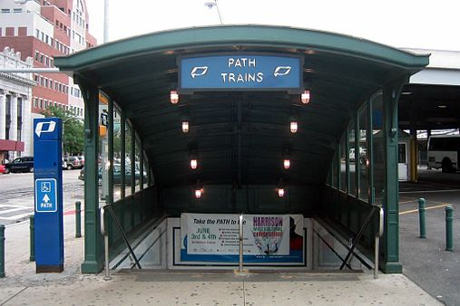
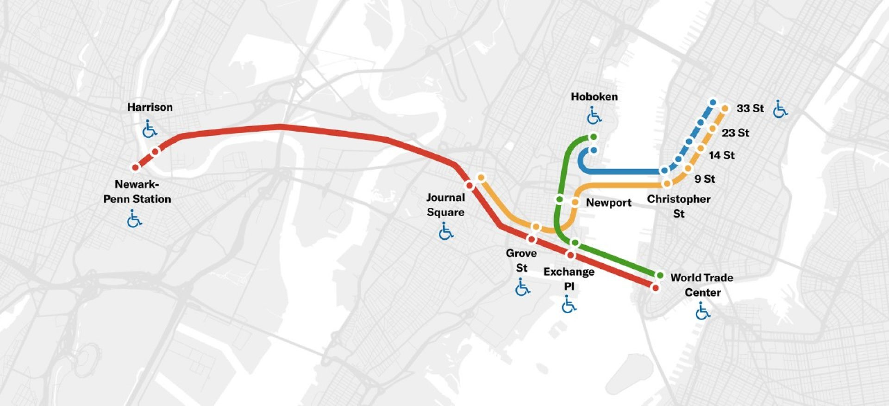
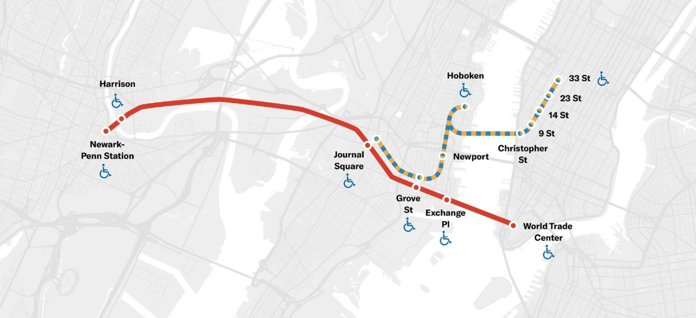
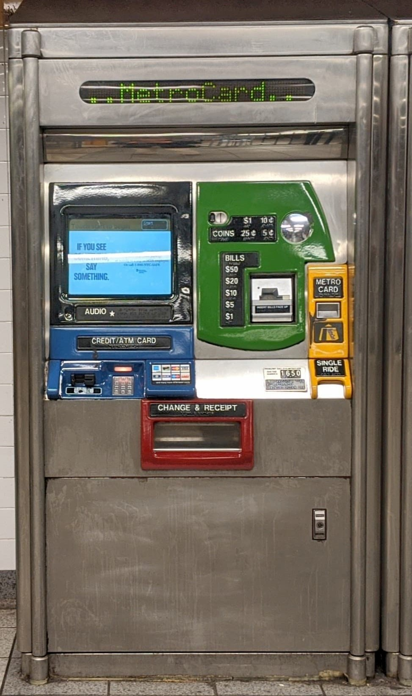

The PATH train is a fast and convenient way to get from Hoboken to New York City. Run by the Port Authority of New York and New Jersey, these trains run underneath the Hudson River. The Hoboken station can be found at the edge of the city, at the intersection of 1st and River Streets. The PATH terminal is beneath the NJ Transit portion of the station, where trains and busses run to various points in New Jersey and New York. From the sidewalk, signs and markings will direct you to the stairs down into the PATH section of the station. The PATH website can be found here.

The entrance to the PATH, as seen from the street
Routes of the PATH:
The map below shows the routes of the PATH train. On weekends and late nights, the Port Authority runs simplified routes. The most common stops are 33rd Street and 9th Street. See below for more details on common locations within walking distance of each station of each train.

A simplified map of the weekday (6 AM - 11 PM Monday to Friday) PATH train

A simplified map of the Weeknight, Weekends, and Holidays (11 PM - 6 AM Monday to Friday, Saturdays, Sundays, and Holidays) PATH train
Purchasing a Ticket:
In the station, there are many different kiosks that are available. The one shown below is the vending machine for One-Way tickets. TICKETS cost $2.75 each way. If you have a New York City MetroCard, you can use it to ride the PATH, provided that there is money loaded on the card. The larger kiosks, shown below, take cash or card. There are Two-Trip MetroCard kiosks, which only take cash, cost $5.50, and can be used on the NYC Subway as well as the PATH. Follow the instructions on the kiosk (either posted on a sign or on the screen as prompted). If you intend on visiting frequently, purchasing a MetroCard is likely for the best.

PATH one-way ticket kiosk
BE CAREFUL! Once on the train, it will stop at each station for only a brief time. Make sure you are paying attention on the way to your stop.
Common Locations Near Each Station of the PATH Train to 33rd St
Christopher Street:
Friends Apartment Building: 90 Bedford St - The Apartment building where the show Friends took place.
Secret Garden at St. Luke in the Fields: 487 Hudson St - Just a nice garden, a nice place to chill out. More information can be found here.
9th Street:
Washington Square Park: Washington Square - Very well known park in Greenwich Village. Only a short walk from the station. More information can be found here.
The Stonewall Inn: 53 Christopher St (Closer to the 9th St Station than the Christopher St Station) - Famous location of the Stonewall Riots, and the beginning of the Gay Rights Movement.
14th Street:
Rubin Museum of Art: 150 W 17th St. - Art from Tibet, Bhutan, and other Asian countries. Does house some rotating exhibits. More information can be found here.
Union Square Park: 201 Park Ave S - Famous hangout spot and has a greenmarket. More information can be found here.
23rd Street:
The Flatiron Building: 175 5th Ave - A famous triangular building from 1902.
Madison Square Park: 11 Madison Ave - Public park that has sculptures and a view of the Flatiron Building. Also a Shake Shack. More information can be found here.
33rd Street:
Empire State Building: 20 W 34th St - Famous office tower from 1931. Has an observatory on the 102nd floor. More information can be found here.
Bryant Park and New York Public Library: 476 5th Ave - New York City's flagship library with a gorgeous park behind it. Bryant Park is 4 acres, houses a fountain, cafe, and other eateries.
Times Square: Intersection of 7th Ave, 42nd St, and Broadway - World-Famous location with bright lights, shows, and the New Year's ball drop.
Rockefeller Center and Radio City Music Hall: 1260 6th Ave - Radio City Music Hall is the famous location of the Rockettes. The Rockefeller Center is well-known for housing TV studios, shopping, and a courtyard that turns into an ice rink.
Central Park: Central Park stretches from 59th to 110th streets (843 acres), and contains a zoo, a reservoir, and is the largest city park in Manhattan. More information can be found here.